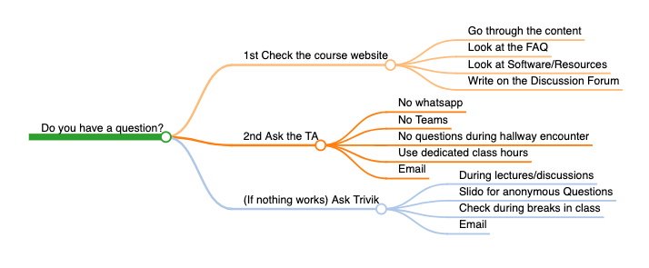

Introduction to Urban Data Science (EPA 1316 A)#
Important Notice#
IMPORTANT:
The course is freely available on this website. There are no online or hybrid meetings. If you just want all of the course materials and not participate in the course any longer, please unenroll from Brightspace. Thank you.
Welcome#
Welcome to Introduction to Urban Data Science at Delft University of Technology. The course is taught by Dr. Trivik Verma with the support of a fantastic team of teaching assistants.
Instructor Details#
Dr. Trivik Verma
Position: Assistant Professor in Urban Science & Policy
Office: B2.390, Building 31
Faculty: Technology, Policy and Management
Address:
Jaffalaan 5
2628 BX Delft
The NetherlandsEmail: t.verma@tudelft.nl
Schedule#
A detailed schedule of the course is provided here.
Locations#
Physical: All lectures, labs, discussions, and office hours will be hosted in person. Physical location information is mentioned in Brightspace calendars. All meetings will take place in The Hague campus of TU Delft.
Virtual: There are no online or hybrid meetings.
Announcements will regularly be made on Brightspace.
Teaching Assistant Support#
Teaching Assistant |
Role |
|
|---|---|---|
Auriane Técourt |
All |
|
Dorukhan Yeşilli |
All |
|
Ludovica Bindi |
All |
|
Vaibhavi Srivastava |
All |
|
Nicolò Canal |
All |
|
Ruth Nelson |
All |
Course Language#
English & Python
Why Python#
General-purpose programming language
“Sweet spot” between “proof-of-concept” and “production-ready”
Industry standard: GIS (Esri, QGIS) and Data Science (World Bank, OECD, The Atlantic, Gemeente Den Haag…)
Expected Prior Knowledge#
Students should have some prior programming experience. It will be beneficial if you have dealt with a functional programming language like R or Python before. If you have never programmed before, it is recommended to do a crash course in Python through Coursera or other online services before joining the class.
Other Information#
Graduate students from all faculties and exchange universities are welcome.
Courses are also available in other faculties more tailored to your respective programs.
This course will add to your skills and provide tools for future roles in policy-making, data science, and open science.
Philosophy of the Course#
Methods and techniques
General overview
Intuition
Very little math
Emphasis on application and real-world use
Feedback Strategy#
Formative Feedback: Weekly general feedback on labs by TAs and direct interaction in lectures, labs, and discussions.
Summative Feedback: Graded assessment of assignments and a final project. Feedback provided before the next assignment is due.
Peer Support: Online forum maintained by the instructor for Q&A.
Questions#
This course focuses on learning to learn. For questions, follow the efficient and organized way of learning outlined in the course.

Key Texts and Learning Resources#
Course Website: https://cusp.tbm.tudelft.nl/courses/epa1316/
Specific readings, videos, and academic references will be provided for each lecture and lab.
Acknowledgement#
Developed using research and input from colleagues, and open-source teaching resources, including:
Arribas-Bel, D. (2019). A course on geographic data science.
Harvard University’s Introduction to Data Science
Geoff Boeing at USC’s Sol Price School of Public Policy
License#
Unless otherwise stated, all content is licensed under a Creative Commons Attribution-ShareAlike 4.0 International License.